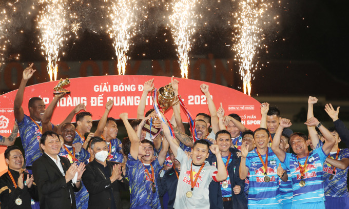

BÌNH ĐỊNHThắng chủ nhà 1-0 ở lượt cuối cùng chiều 9/1, HAGL lên ngôi tại giải giao hữu Hoàng Đế Quang Trung 2022. Sau khi hạ Bình Dương và Đà Nẵng, HAGL chỉ cần kiếm thêm một điểm. Do vắng bảy tuyển thủ quốc gia, HLV Kiatisuk Senamuang tiếp tục sử dụng các cầu thủ trẻ bên cạnh những đàn anh như Tuấn Linh, Hữu Tuấn và hai ngoại binh Brandao - Mauricio. Trái lại, Bình Định phải thắng hai bàn cách biệt. Vì vậy, ngay từ đầu, HLV Nguyễn Đức Thắng đã tung vào sân đội hình mạnh, gồm Tiến Duy, Văn Thuận, Hendrio, Lynch và Rafaelson...
Ảnh: HLV Kiatisuk và các học trò nâng Cup Hoàng Đế Quang Trung 2022 trên sân Quy Nhơn chiều 9/1.Hai đội chơi cởi mở nhưng không tận dụng được cơ hội trong hiệp một. Hiệp hai, Bình Định tung Hồ Tấn Tài và Đỗ Thanh Thịnh vào sân, đẩy mạnh hơn nữa khâu tấn công. Dù vậy, hàng thủ HAGL vẫn đứng vững. Khi nhận thấy thời cơ chín muồi, HLV Kiatisuk tung thêm tiền đạo Baiano để chơi phản công. Và đội bóng phố núi đã thành công. Phút 86, Baiano phối hợp cùng đồng đội trước khi sút tung nóc lưới Bình Định, ghi bàn duy nhất trận đấu và đem về danh hiệu đầu tiên cho HAGL dưới thời Kiatisuk. "Tôi rất vui. Đây là món quà gửi đến người hâm mộ HAGL", nhà cầm quân Thái Lan cho hay. "Chúng tôi mang đến giải 11 cầu thủ trẻ, thậm chí có người mới 17 tuổi, nhưng đều chơi tốt. Bên cạnh kết quả, tôi mừng vì họ đã có cơ hội cọ xát khi đối đầu các đội bóng mạnh. Tất nhiên, đây chỉ là giải đấu giao hữu nên chưa nói được nhiều điều. V-League sắp tới mới là giải đấu quan trọng với các đội bóng".
Ảnh: Baiano mừng bàn duy nhất trận đấu vào lưới Bình Định.Mùa trước, dưới sự dẫn dắt của HLV Kiatisuk, HAGL chơi khởi sắc. Cho đến hết 12 vòng (vòng áp chót của giai đoạn I), họ đạt 29 điểm, hơn ba điểm so với đội đứng thứ hai Viettel. Chưa bao giờ cơ hội vô địch của HAGL cao đến thế, kể từ khi lứa một của Học viện được đưa lên đá V-League năm 2015. Tuy nhiên, do Covid-19, V-League bị huỷ nên kết quả thi đấu của HAGL không được công nhận. V-League 2022 sẽ trở về với thể thức đá vòng tròn lượt đi và lượt về, dự kiến khai mạc ngày 19/2 và kết thúc ngày 12/11. Theo kết quả bốc thăm, HAGL sẽ khởi đầu mùa giải bằng chuyến làm khách đến sân của Nam Định.
Vô địch: HAGL Á quân: Bình Dương Thứ Ba: Đà Nẵng Giải phong cách: Bình Định Vua phá lưới: Washington Brandao (HAGL) Thủ môn hay nhất: Tuấn Linh (HAGL) Cầu thủ hay nhất: Rafaelson (Bình Định)